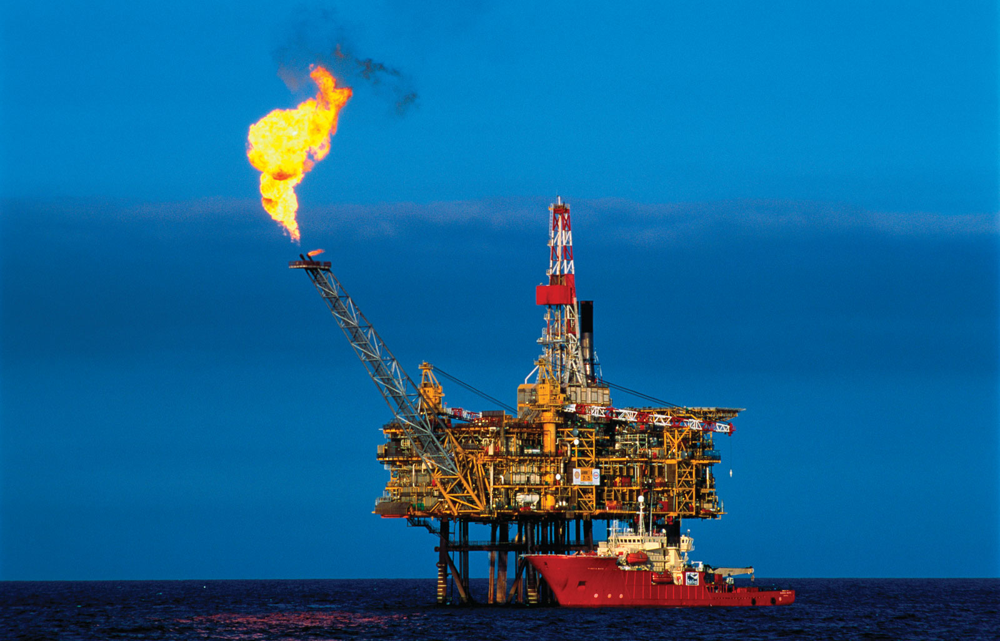
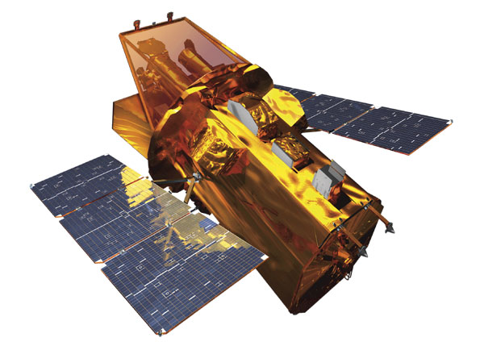
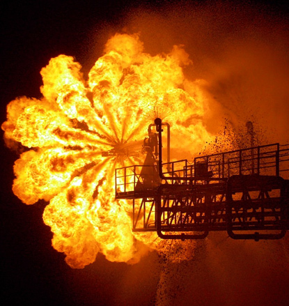

Advanced Radiation
Reflections, occlusions, and other complexities in thermal radiation can make calculations challenging!
-
In previous lectures, we found there are 3 main modes of heat
transport.
Conduction, Convection, and Radiation. - We found that there are two forms of convective heat transfer, forced and natural.
- We discovered that the film transfer coefficients in both cases are calculated using empirical power laws. \begin{align*} h_{forced} &= C \text{Re}^m\text{Pr}^n\\ h_{natural} &= C \left(\text{Gr} \text{Pr}\right)^m \end{align*}
- We found an analogy for the Reynolds number, called the Grashof number.
- We found that radiative heat transfer is governed by an equation of the form \begin{align*} Q = \sigma \varepsilon A_{obj}\left(T_{obj}^4-T_\infty^4\right) \end{align*}
- We will now cover a little more on radiative transport before moving on.

- We've considered thermal radiation in systems where an object is completely surrounded by a larger body.
- In this special case, we have the following expression. \begin{align*} Q = \sigma \varepsilon A_{obj}\left(T_{obj}^4-T_\infty^4\right) \end{align*} where $\sigma$ is the Stefan-Boltzmann constant, and $\varepsilon$ is the emissivity of the object.
- This can be used for rough heat-loss calculations on external pipes, vessels and so on.
- Some typical values for the emissivity are given in the following table.
| Surface | $\varepsilon$ | Surface | $\varepsilon$ |
| Asbestos, Board | 0.96 | Carbon, Candle soot | 0.95 |
| Water | 0.95–0.96 | Carbon, Lampblack | 0.95 |
| Iron and steel, rough | 0.94–0.97 | Brick, Red, rough | 0.93 |
| White enamel paint | 0.906 | Iron and steel | 0.74 |
| Iron and steel, Sheet steel, oxidised | 0.657 | Oxidised Lead | 0.28 |
| Iron and steel, Polished iron | 0.14–0.38 | Rough Aluminium | 0.06 |
| Polished Aluminium | 0.04 | Highly polished Gold | 0.02–0.35 |

- But what about radiation in more complex geometries?
- In the furnace, the radiant transfer of heat is crucial to its function but the pipes extracting heat do not completely surround the flame.
- When designing and positioning a flare, we must be careful to minimise the radiant heating of the rig and personnel.
- We may even use shielding to reduce the radiant flux onto objects…
- The amount of heat emitted by object 1 and received by object 2 is given by \begin{align*} Q_{1\to2} = F_{1\to2} \times \sigma \varepsilon_1 A_{1} T_{1}^4 \end{align*}
- Where we have defined $F_{1,2}$ as the ratio of how much of object 1's emitted radiant heat reaches object 2.
- $F_{1,2}$ is known as the view factor or shape factor or configuration.
- If two black ( $\varepsilon=1$ ) objects are at the same temperature, they cannot exchange heat (without violating the second law of thermodynamics), and we have \begin{align*} Q_{1\to2} &= Q_{2\to1}\\ F_{1\to2} \times \sigma \varepsilon_1 A_{1} T^4 &= F_{2\to1} \times \sigma \varepsilon_2 A_2 T^4\\ F_{1\to2} A_{1} &= F_{2\to1} A_2 \end{align*}
- This is known as the reciprocity relationship.
-
To obtain the value of $F_{1\to2}$, we have to solve a complex
integral… \begin{align*} A_1 F_{1\to2} = \iiint
\cos\alpha_1\cos\alpha_2 \pi^{-1} L^{-2} {\rm d}A_1 {\rm d}A_2
\end{align*}
- To solve this integral you typically require a numerical approach, but there are plenty of expressions/graphs/etc. available in the literature for simple geometries.
- Some simple rules would really cut down on the amount of work needed...
- We need to note is that if an object (2) surrounds another object (1), all radiation from 1 will reach object 2. \begin{align*} F_{1\to2}=1 \end{align*} We are already using this rule when calculating radiation loss of vessels to the surroundings.
- But not all of the radiation emitted from object 2 will reach 1. Some will reach object 2 again as object 2 is convex (see the red arrows)!
- But we have the reciprocity relationship. \begin{align*} F_{1\to2} A_{1} &= F_{2\to1} A_2 \end{align*}
- For our example image we have $F_{1\to2}=1$ so we can use the reciprocity relationship to give \begin{align*} F_{2\to1}=\frac{A_1}{A_2} \end{align*} in this particular case.
- A similar rule is the summation rule.
- If an object is surrounded by other objects, the view factors must add up to 1!
- This gives the following rule for the arrangement on the left \begin{align*} F_{1\to2}+F_{1\to3}+F_{1\to4} = 1 \end{align*}
- If we took away object 3 and 4, the radiation lost to the uncovered surroundings would be \begin{align*} F_{1\to S} = 1 - F_{1\to2} \end{align*}
- Consider a pot placed on an electric cooker…
- We want to calculate the efficiency of radiant heating and how much heat is lost to the environment.
- For simplicity, we'll assume that the heat source can be modelled as a disk with the same diameter (30 cm) as the pot.
- The pot is not placed directly on the heat source of the cooker but is suspended some height (15 cm) above it.
- Assume the water is boiling ($T_2=100^\circ$ C) and the heater is at $T_1=1000^\circ$ C.
- We'll start by calculating the heat transmitted between the plates…
- We need to calculate the viewing factor $F_{1\to 2}$.
-
The formula given in the table for parallel coaxial disks is
\begin{align*} F_{1\to
2}=0.5 \left(S-\left(S^2-4(r_j/r_i)^2\right)^{0.5}\right)
\end{align*} where $S=1+\left(1+R_j^2\right)/R_i^2$,
* $R_i=r_i/L$ and $R_j=r_j/L$. - We have $R_1=R_2=15/15$, so \begin{align*} S&=1+\left(1+R_j^2\right)/R_i^2\\ &= 1+(1+1)/1 = 3 \end{align*}
- Thus \begin{align*} F_{1\to2}&=0.5 \left(S-\left(S^2-4(r_j/r_i)^2\right)^{0.5}\right)\\ &=0.5 \left(3-\left(3^2-4\right)^{0.5}\right)= 0.382 \end{align*}
- The heat transmitted between the hot plate and the pot bottom is given by \begin{align*} Q_{1\to2} &= Q_{2\to1} = F_{1\to2} A_1 \sigma \left(T_1^4-T_2^4\right)\\ &= 0.382 \pi 0.15^2 5.67\times10^{-8}\left(1273^4-373^4\right)\\ &= 3990 \text{W} \end{align*}
- A kitchen kettle produces around 1-3 kW, so this is a slightly high amount to transmit, but not unreasonable.
- But what is the total amount of heat emitted by the bottom plate, including the amount lost to the surroundings?
- What is the value of the viewing factor to the surroundings ($F_{1\to S}$ )?
- Any heat that does not reach the opposite disk, must go to the surroundings, so from the summation rule we have \begin{align*} F_{1\to S} = 1 - F_{1\to 2}= 0.618 \end{align*}
- Assuming the temperature of the surroundings is $T_s=17^\circ$ C, the heat lost to the surroundings from plate 1 is \begin{align*} Q_{1\to S} &= F_{1\to S} A_1 \sigma \left(T_1^4-T_S^4\right)\\ &= 0.618 \pi 0.15^2 5.67\times10^{-8}\left(1273^4-300^4\right)\\ &= 6484 \text{W} \end{align*}
- The bottom plate is producing around 10.5 kW of heat but only 4 kW actually reaches the opposite plate!
- This is not an efficient distance at which to cook!
- This is made even worse by the pot radiating to the surroundings as well, although this is not a significant amount of heat
- The radiation from the bottom of the pot is \begin{align*} Q_{2\to S} &= F_{2\to S} A_2 \sigma \left(T_2^4-T_S^4\right)\\ &= 0.618 \pi 0.15^2 5.67\times10^{-8}\left(373^4-300^4\right)\\ &= 27 \text{W} \end{align*}

- You can completely remove conductive and convective heat transfer by using a vacuum (think about a thermos).
- But how do you insulate against thermal radiation?
- Consider an oil rig flare, we might need to protect vessels from high surface temperatures during emergency flaring.
- Plating everything with gold could be expensive and will not work at high temperatures.
- The answer is to use radiation shields…
- Consider two parallel plates and assume for simplicity that they have equal emissivity $\varepsilon_1=\varepsilon_2=\varepsilon$ and area $A_1=A_2=A$.
- The thermal radiation heat flux is given by \begin{align*} Q = \sigma A \varepsilon \left(T_1^4 - T_2^4\right) \end{align*}
- We could try adding an additional radiation shield between the heat source and object to screen some radiation.
- This shield will still heat up and re-emit the radiation, but at a lower overall flux $Q$.
- The thermal radiation heat flux is then \begin{align*} Q&= Q_{1\to3}=\sigma A \varepsilon \left(T_1^4 - T_3^4\right)\\ &= Q_{3\to2}=\sigma A \varepsilon \left(T_3^4 - T_2^4\right) \end{align*}
- With a bit of rearrangement we obtain \begin{align*} T_3^4 = \frac{1}{2}\left(T_1^4+T_2^4\right) \end{align*}
- If we insert this back into either of the above expressions for the heat flux we obtain \begin{align*} Q&= \frac{1}{2} \sigma A \varepsilon \left(T_1^4 - T_2^4\right) \end{align*}
- Adding a heat shield reduced our heat transfer by radiation by a factor of $1/2$.
- Extending to $N$ heat shields one after another, we find the radiative heat flux is reduced by a factor \begin{align*} \frac{Q_{shielded}}{Q_{unshielded}} = \frac{1}{1+N} \end{align*}
- NASA is using this property well.

Learning objectives
- We have learnt about the view factor, $F_{12}$, in thermal radiation and its use in determining the heat transmitted between objects.
- We have discovered the reciprocity relationship for the view factor between two objects \begin{align*} F_{1\to2} A_{1} &= F_{2\to1} A_2 \end{align*}
- We have found that heat shields are effective devices for screening thermal radiation, and the reduction in heat flux is given by \begin{align*} \frac{Q_{shielded}}{Q_{unshielded}} = \frac{1}{1+N} \end{align*}